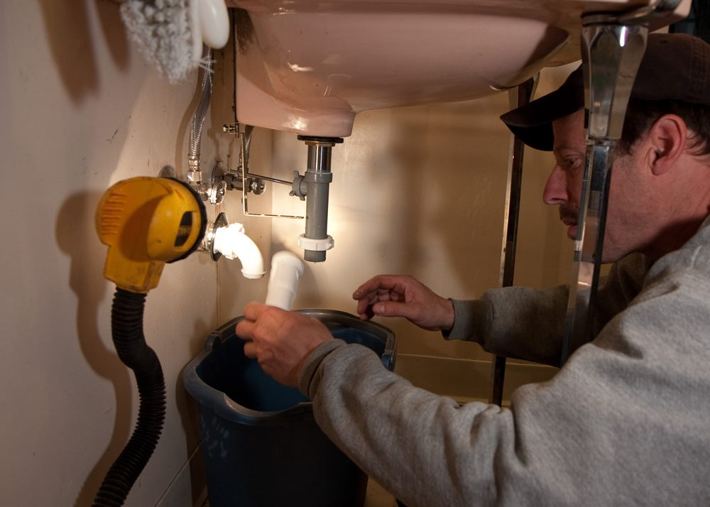
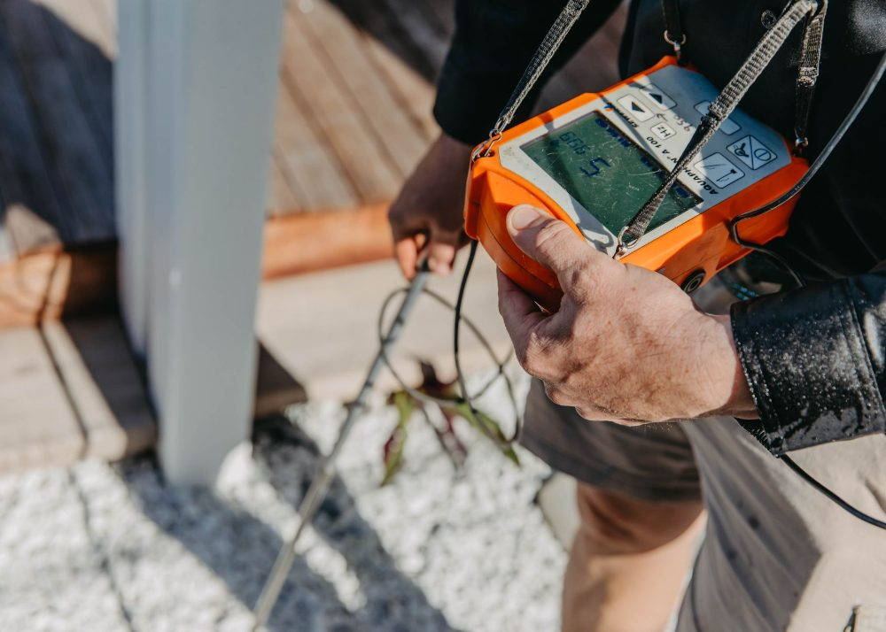
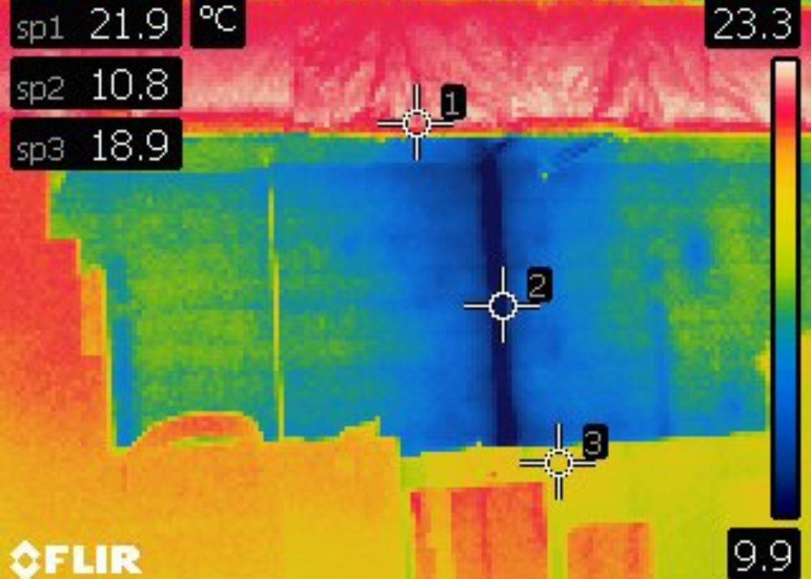
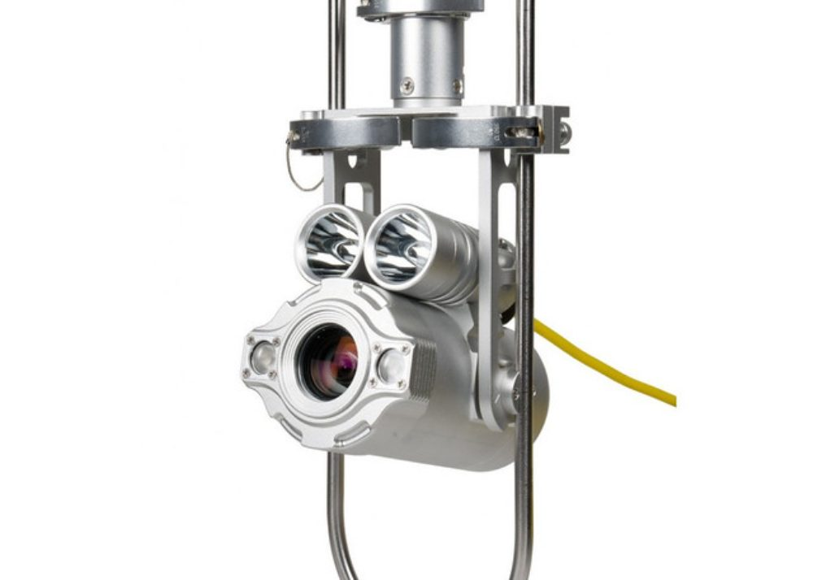
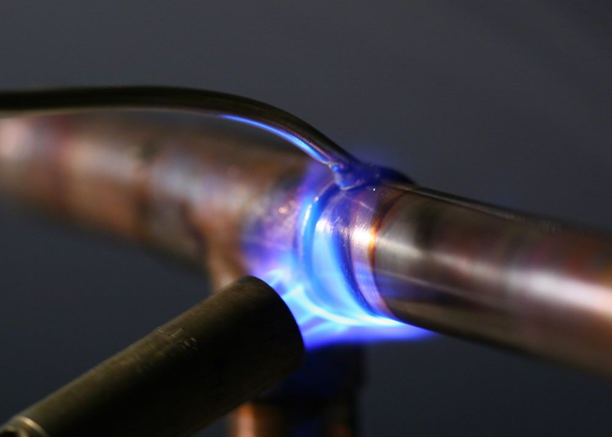
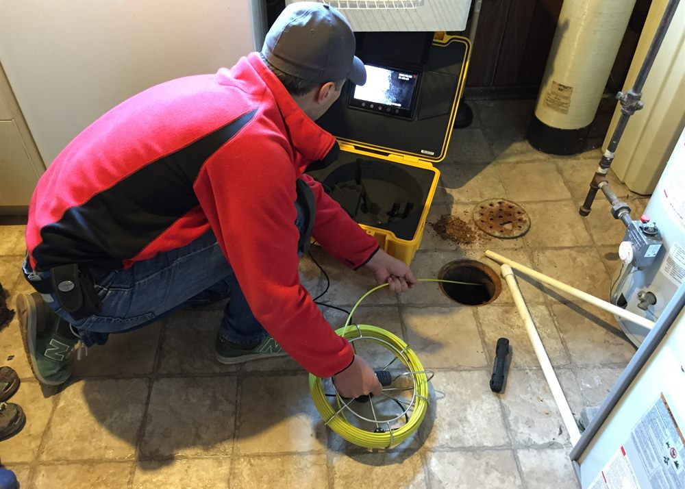

Combinamos seis métodos de pesquisa e reparação. Escolhemos o certo para cada caso — e usamos vários quando é preciso garantir o resultado.
Introduzimos um gás traçador certificado (mistura de hidrogénio/azoto) na rede. O gás é mais leve que o ar e sobe pelo ponto da fuga, onde é detectado à superfície com sensores de alta sensibilidade.


A água a escapar sob pressão produz um som característico. Com geofones e microfones de solo amplificamos e isolamos esse ruído para localizar a fuga através de pavimentos, paredes e pisos.
A humidade altera a temperatura das superfícies. Com câmara termográfica e análise de contraste térmico tornamos visível o rasto da água em paredes, tectos e pavimentos — incluindo redes de aquecimento.


Uma micro-câmara endoscópica percorre tubagens, ramais e colectores por dentro. Vê-se o estado real da conduta — fissuras, obstruções, raízes ou rupturas — sem abrir o pavimento.
Detectar e reparar com a mesma equipa poupa tempo e dores de cabeça. Depois de localizar a fuga, resolvemos a origem e repomos a zona intervencionada, deixando tudo a funcionar.


Elaboramos perícias e relatórios técnicos a instalações hidráulicas, com documentação fotográfica, térmica e descritiva — para companhias de seguros, condomínios, administrações e processos.
Diga-nos o que se passa e nós dizemos como resolver. Orçamento sem compromisso.